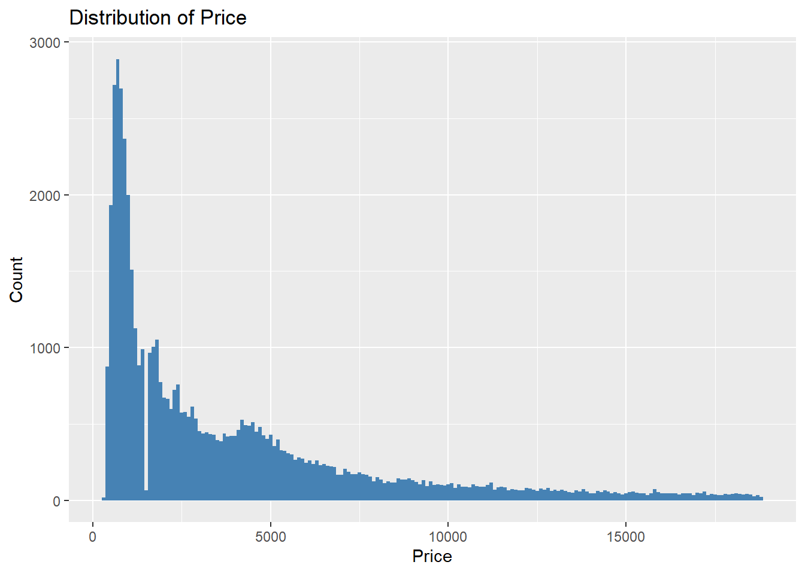
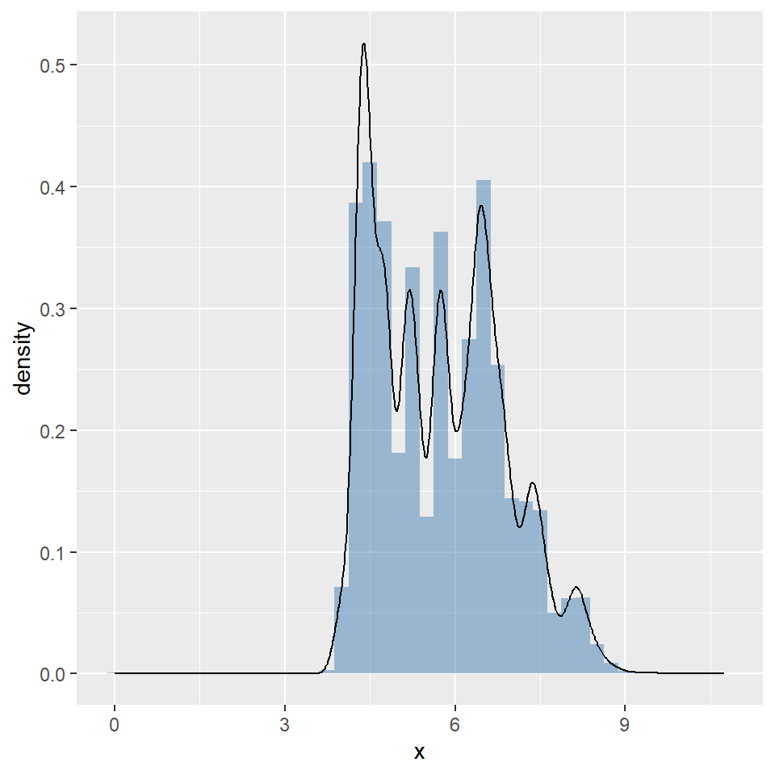
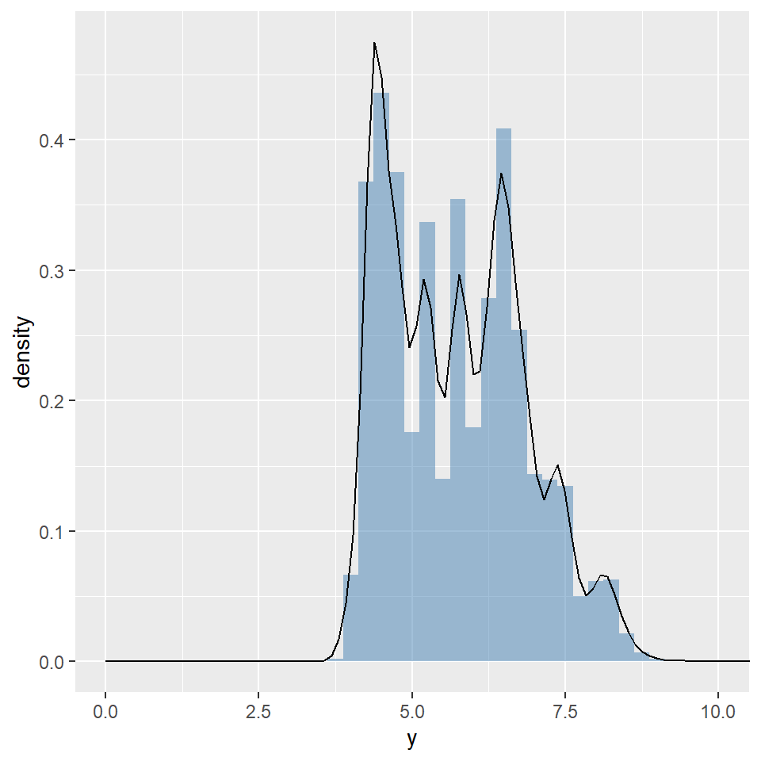
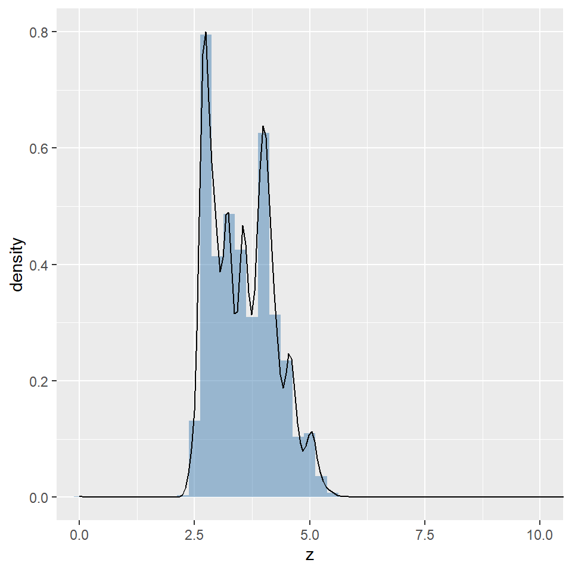
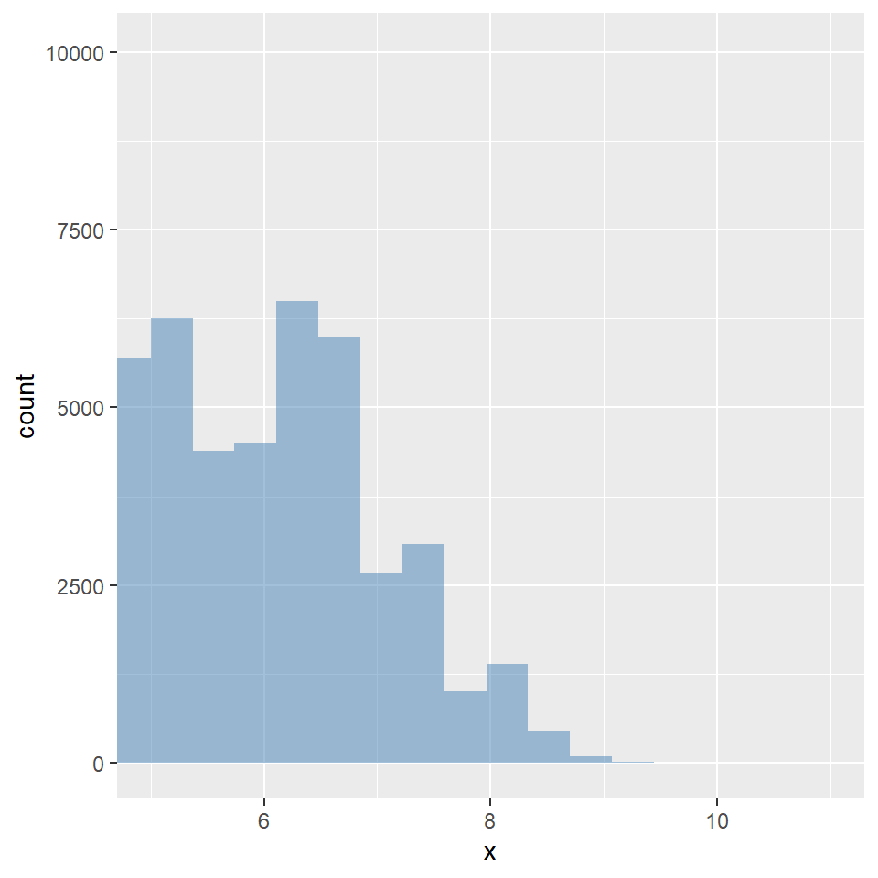
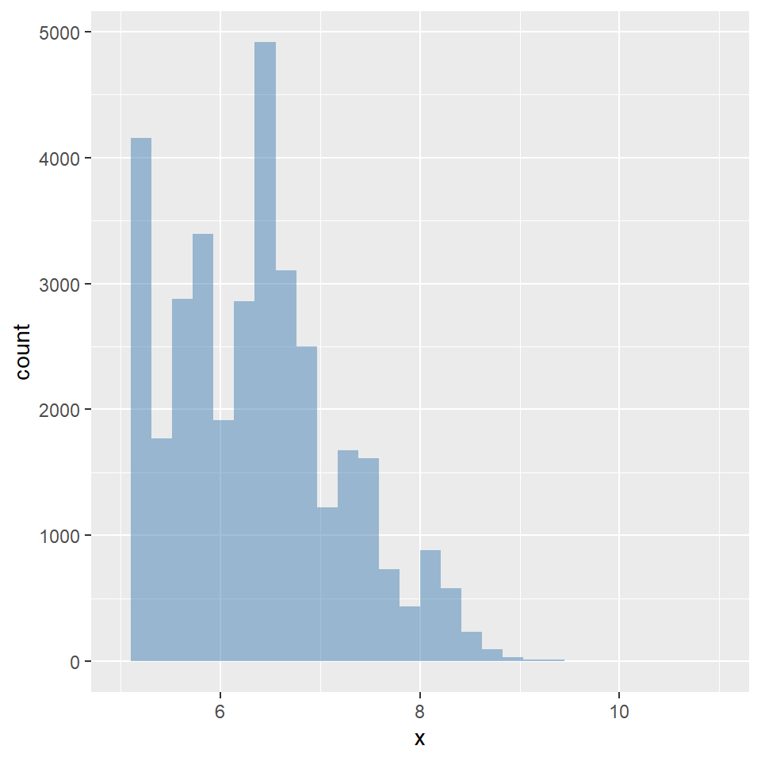
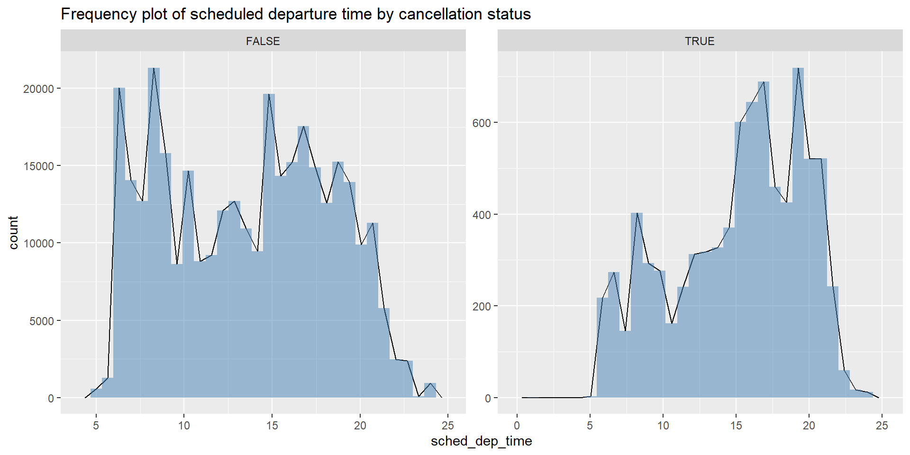

Code
ggplot(data = diamonds, aes(x = price)) +
geom_histogram(binwidth = 100, fill = "steelblue") +
labs(title = "Distribution of Price", x = "Price", y = "Count")
Explore the distribution of each of the
x,y, andzvariables indiamonds. What do you learn? Think about a diamond and how you might decide which dimension is the length, width, and depth.
Solution:
Inspecting the three distributions, honestly, there is nothing abnormal
(Except some big measurmenet like y~59 mm and 0 mm as a dimension of a diamond that may represent missing values and not an invisible diamond...): the diamonds share measurements, in terms of dimensions, in a somewhat similar way. Admittedly, there is a tight range, if I may say so, for each of the dimensions, technically: x in mm (0–10.74), y in mm (0–58.9), z in mm (0–31.8). Ultimately, it turns out that these diamonds, seen from afar, are of the same dimensions, but from an artisanal/industrial point of view, they differ from each other in terms of dimensions. Regarding the length, width, and depth, it seems to me that it is a bit tricky to properly assign these variables to their suitable names given that diamonds, to my knowledge, are already round and their dimensions can present a sort of overlap: the length can be seen as the width, etc.
library(ggplot2)
library(tidyverse)
# left
ggplot(diamonds, aes(x = x)) +
geom_histogram(aes(y = after_stat(density)), binwidth = 0.25, alpha = 0.5, fill = "steelblue") +
geom_density()
# middle
ggplot(diamonds, aes(x = y)) +
geom_histogram(aes(y = after_stat(density)), binwidth = 0.25, alpha = 0.5, fill = "steelblue") +
geom_density()+
coord_cartesian(xlim = c(0, 10))
# right
ggplot(diamonds, aes(x = z)) +
geom_histogram(aes(y = after_stat(density)), binwidth = 0.25, alpha = 0.5, fill = "steelblue") +
geom_density()+
coord_cartesian(xlim = c(0, 10))


Explore the distribution of
price. Do you discover anything unusual or surprising? (Hint: Carefully think about thebinwidthand make sure you try a wide range of values.)
Solution:
The distribution of price shows a
right-skewed patternwith a long tail towards higher prices. There is anoticeable concentration of diamonds in the lower price range, and fewer diamonds as prices increase. Trying different binwidths reveals that the histogram becomes more detailed with smaller binwidths, but can also highlight outliers or patterns that are not immediately apparent with larger binwidths.
ggplot(data = diamonds, aes(x = price)) +
geom_histogram(binwidth = 100, fill = "steelblue") +
labs(title = "Distribution of Price", x = "Price", y = "Count")
How many diamonds are
0.99carat? How many are1carat? What do you think is the cause of the difference?
Solution:
Data is not just cold numbers; it reflects human behaviors and economic realities. The facts are as follows: there are 23 diamonds at 0.99 carats and 1,558 diamonds weighing exactly 1 carat. Although the other variables hardly explain such a gap, imagine the upstream situation as follows: the diamond cutter intended to produce 1,581 one-carat diamonds (driven by buyer psychology: a customer buying an engagement ring often wants to be able to announce that the stone is “1 carat”; a 0.99-carat diamond simply does not hold the same symbolic prestige, even if the size difference is strictly impossible to see with the naked eye). Ultimately, the cutter succeeded at a very high rate, while incidentally producing—as if he slightly missed the mark—23 diamonds at 0.99 carats.
Compare and contrast
coord_cartesian() vs.xlim() orylim() when zooming in on a histogram. What happens if you leave binwidth unset? What happens if you try and zoom so only half a bar shows?
Solution:
xlim() andylim() : These functions filter the dataset before any statistical transformations are calculated. Any data points outside the specified limits are completely dropped from the dataset (which is why you see a warning).
coord_cartesian() : This acts as a true visual zoom. It keeps all the underlying data intact, calculates the statistics (like binning for the histogram) based on the full dataset, and only clips the final visual output after the plot is drawn.
As you can notice, we are using the same data across the two ggplot functions but we get different plots. Why ? Well first of all, we left the bindwidth unset which led to histogram with fixed 30 bins. But the first plot with
coord_cartesianis just a zoom/part of this histogram with x values between 5 and 11 mm which results in a histogram of let’s say half of 30 bins. The second plot, in contrast, will always be a histogram of 30 bins since we are using xlim.
# left
ggplot(diamonds, aes(x = x)) +
geom_histogram(alpha = 0.5, fill = "steelblue") +
coord_cartesian(xlim = c(5, 11))
# right
ggplot(diamonds, aes(x = x)) +
geom_histogram(alpha = 0.5, fill = "steelblue") +
xlim(5,11)

What happens to missing values in a histogram? What happens to missing values in a bar chart? Why is there a difference in how missing values are handled in histograms and bar charts?
Solution:
In a histogram, missing values (NA) are typically excluded from the calculation, which means they do not contribute to the bin counts. In a bar chart, missing values are often treated as a separate category, resulting in a bar for NA. The difference arises because histograms represent continuous data distributions, where missing values are not meaningful, while bar charts represent categorical data, where missing values can be considered a valid category.
What does na.rm = TRUE do in mean() and sum()?
Solution:
na.rm = TRUE removes missing values (NA) from the calculation. In the context of mean() and sum(), this means that any NA values in the input vector are excluded from the computation. For mean(), this results in the average of the non-missing values, while for sum(), it results in the sum of the non-missing values. If na.rm = FALSE (the default), the presence of any NA values will result in an NA output.
Recreate the frequency plot of
scheduled_dep_timecolored by whether the flight was cancelled or not. Also facet by thecancelledvariable. Experiment with different values of thescalesvariable in the faceting function to mitigate the effect of more non-cancelled flights than cancelled flights.
Solution:
data.2 = nycflights13::flights |>
mutate(
cancelled = is.na(dep_time),
sched_dep_time = hour + (minute / 60)
)
ggplot(data.2, aes(x = sched_dep_time)) +
geom_freqpoly() +
geom_histogram(alpha=0.5, fill = "steelblue") +
facet_wrap(~ cancelled, scales = "free") +
labs(title = "Frequency plot of scheduled departure time by cancellation status")